Case Study
Giving HR its time back.
Redesigning a manual education and training request process into a guided Power App that automates calculations, reduces HR administration, and makes the next step clear at every stage.
Note: To protect internal information, identifying elements have been removed. The example uses my own profile, while sensitive information (e.g., salary) has been replaced with fictional values.
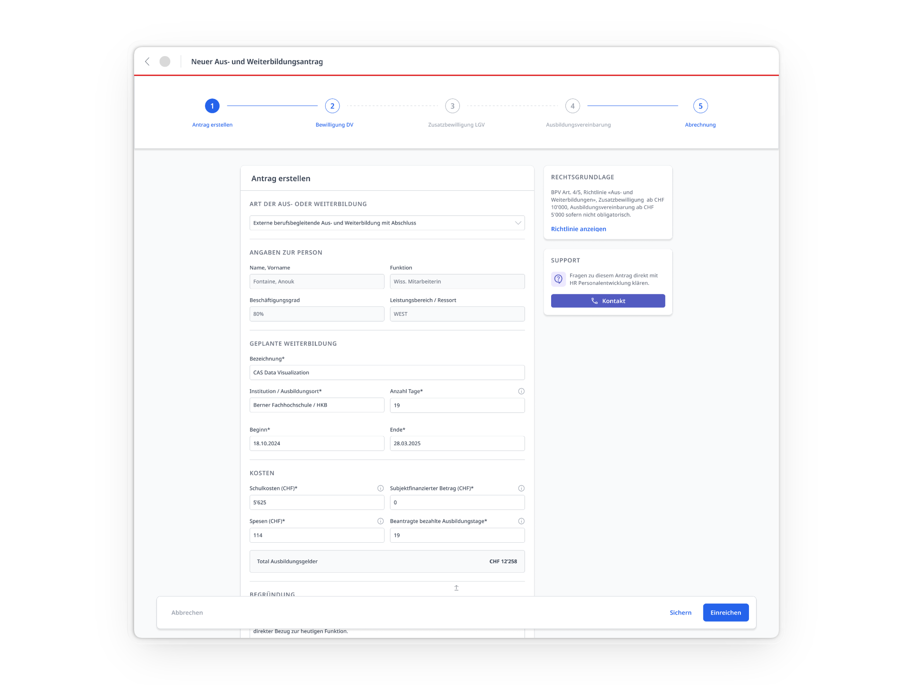
Problem
One request triggers an avalanche of background work.
Too much HR administration
HR had to repeatedly check information, transfer data manually and intervene throughout the process.
Error-prone inputs
Employees had to enter personal information manually, which HR then had to verify and often correct.
Stalled requests
Requests could remain pending for weeks until HR had to follow up, while outdated requests were often left in the system and simply forgotten.
Solution
A Power App
that can do it all.
A single Power App brings the entire education and training request process into one place, so employees only need to know one interface while being guided through the process step by step. Automated calculations, prefilled information, business rules and reminders allow HR to be fully removed from the operational workflow.
One app and an adaptive flow
All education and training requests can now be submitted through the same form, so users only need to know one interface. The required steps, approvals and calculations adapt based on the users’ selections.
Manual work automated
Existing data, calculations and business rules are handled automatically, eliminating repeated checks, manual corrections and other administrative tasks previously required from HR.
Clear status for everyone
Employees and managers can see at all times where a request stands and what happens next. HR can monitor the underlying data without being involved in each individual request.


Impact
Giving HR its time back.
2'000+
education and training requests automated per year.
0
routine HR quality checks needed during the process.
100%
of surveyed stakeholders are satisfied with the new process.
Process
How we got there
01
Understand
Translating workflows into user flows.
When I joined the project, I reviewed the existing documentation provided by the digital transformation team. They had already done substantial groundwork, including requirements engineering, interviews, workshops, user stories and a target process. The technology was set: a Power App. The user experience still needed to be defined, which is where I came in. Key Decision: Involve engineers early to understand the possibilities and constraints of Power Apps.
User flows defined the screens, steps and decision points needed in the app.
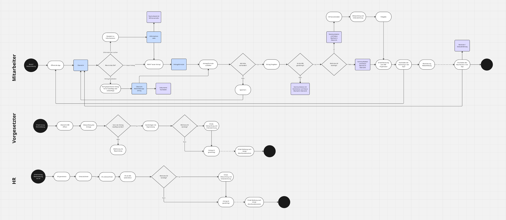
02
Design
A design system with gaps.
After reviewing a lo-fi concept with engineers, I used Claude to rapidly create a functional prototype that could be tested early on. When it came to creating high-fidelity designs, I worked with the existing Swiss federal design system wherever applicable. Key Decision: The Swiss federal design system was built primarily for public websites and lacked some components needed for internal apps. In those cases, I used patterns from established internal tools that employees were already familiar with rather than creating new ones.
Translating the AI-generated prototype into a high-fidelity design in Figma.
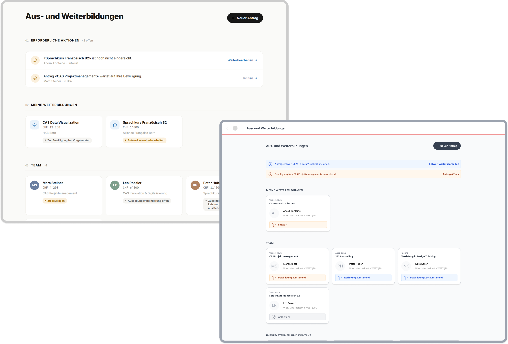
03
Test
Observing users to find hiccups.
Five moderated usability studies with employees, managers and HR specialists led to several refinements. Across all user groups, the new solution was met with strong enthusiasm. Key Decision: Test and iterate on the AI prototype as much as possible to reduce rework, effort and cost later in high-fidelity design and Power Apps development.
Iteration: Reduce cognitive load with information buttons
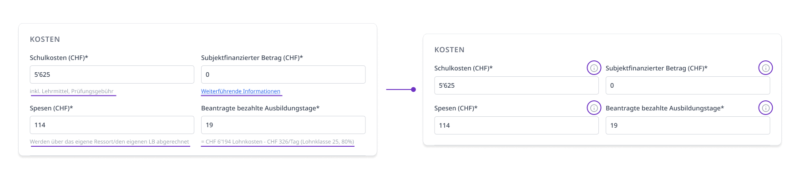
Iteration: remove the simulator, which turned out to be more confusing than helpful.
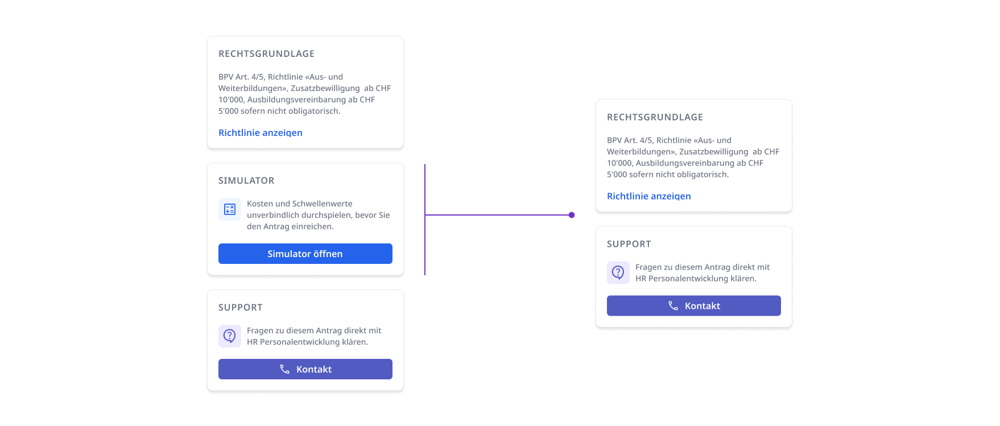
Iteration: add tailored approval interfaces where a single standardized interface proved unsuitable.
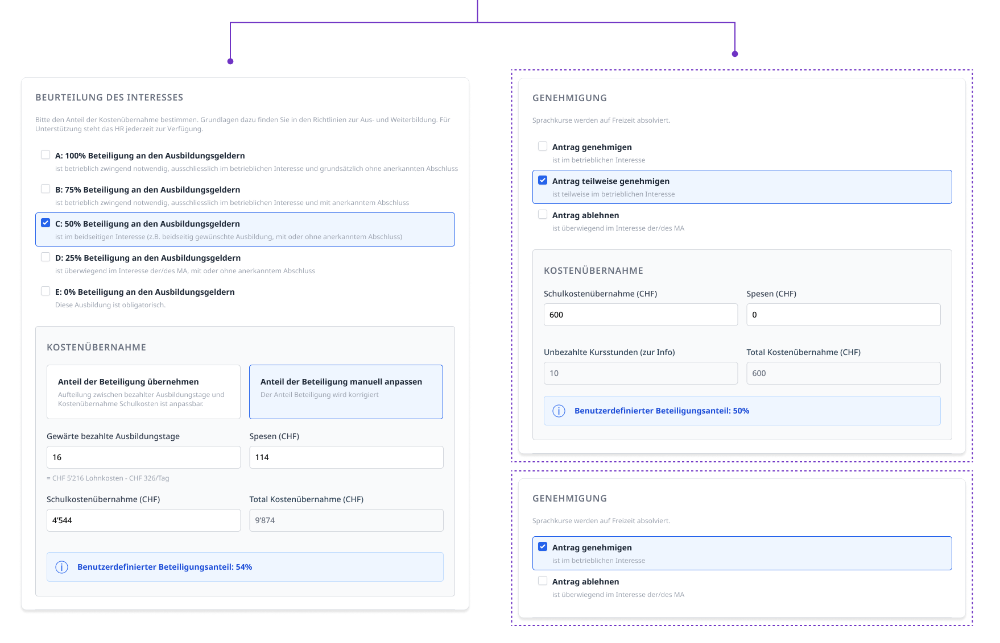
04
Build
Finding the pragmatic path.
Collaboration with engineers and the digital transformation team was lightweight but continuous, with short weekly meetings for open questions and Jira for structured feedback and testing issues. Key Decision: When time and budget constraints forced features out of scope, I focused on what those cuts would mean for users. Instead of simply reverting to the existing process, I looked for lower-effort alternatives that preserved the most important parts of the intended experience.
Jira as the main collaboration tool.
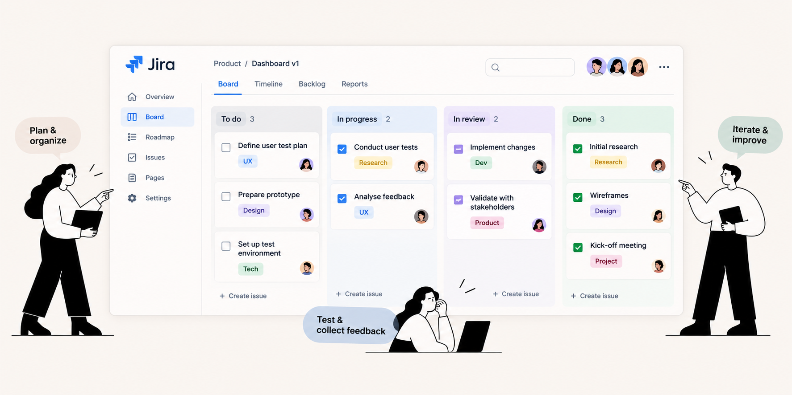
The Final Product
A clear path for each request.
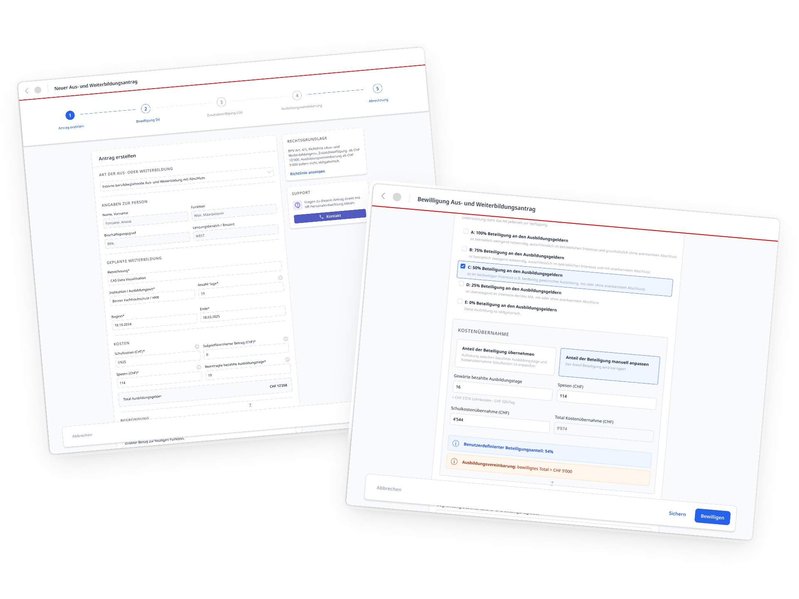
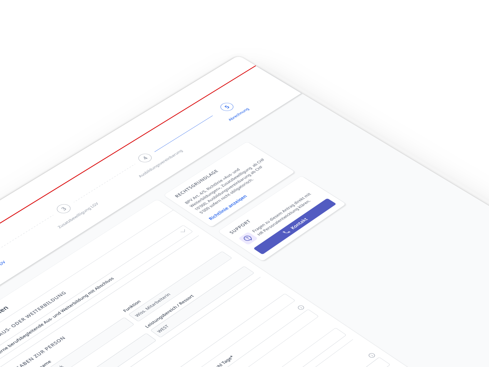
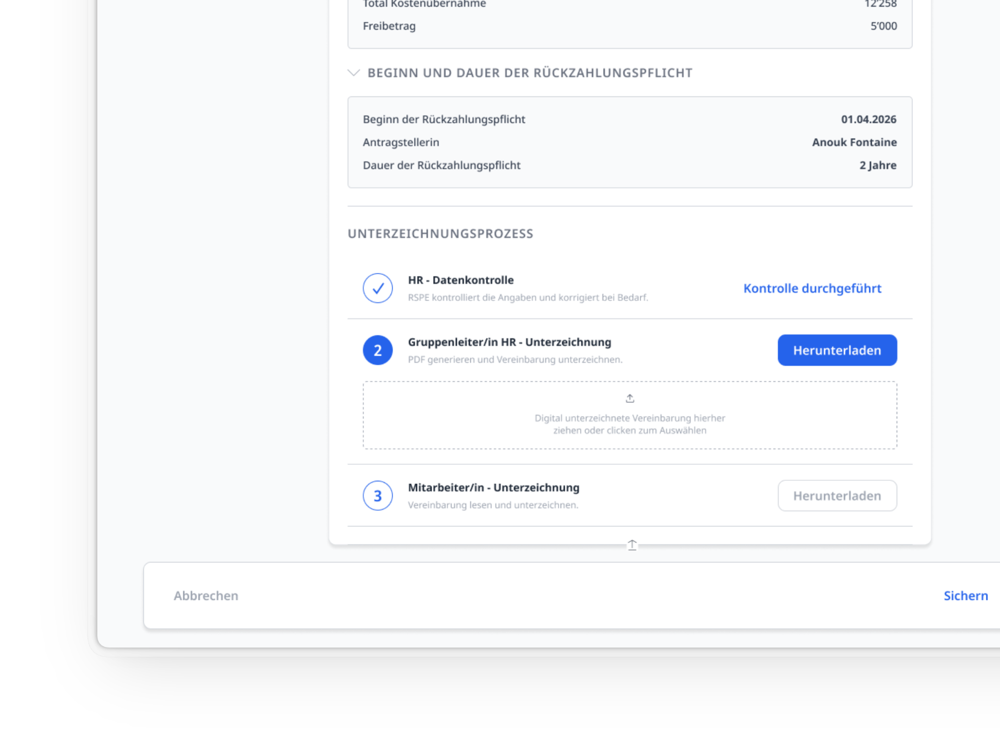